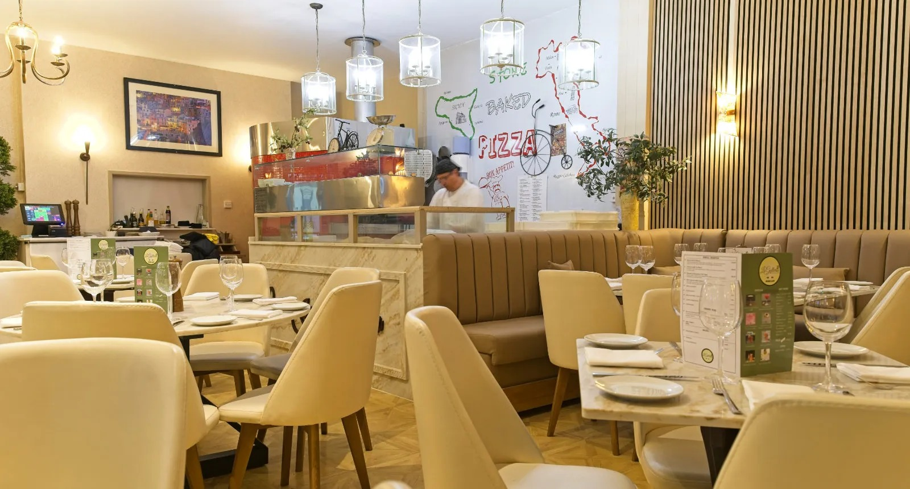
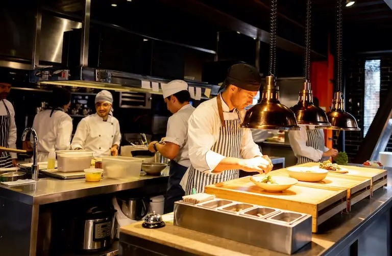
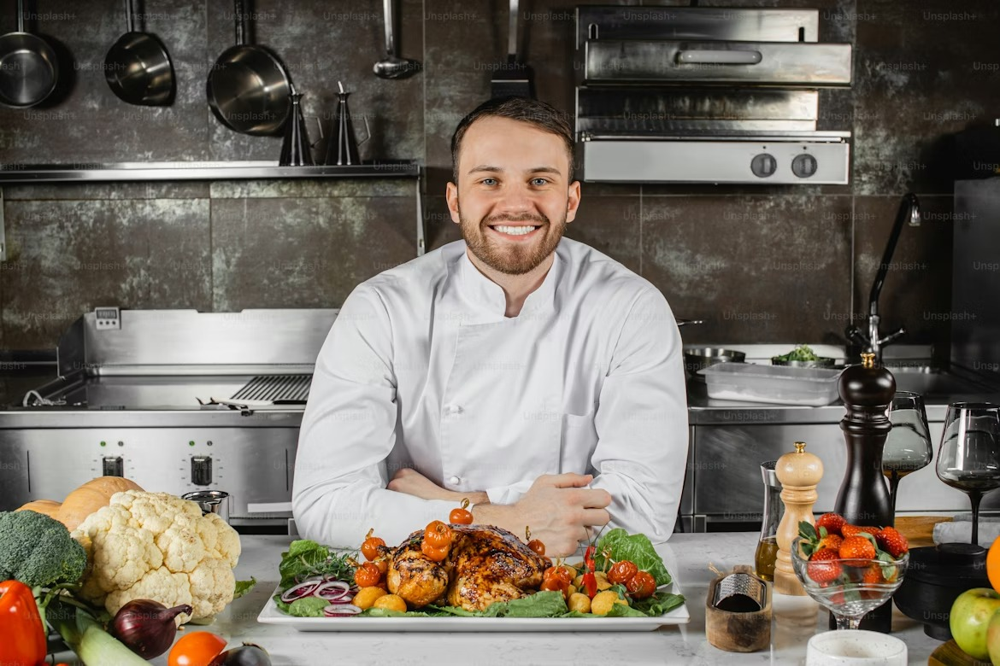

OUR STORY
PASSION · TRADITION · EXCELLENCE
Born from a dream
Restaurante Peak was born in 2019 from a dream to bring the warmth and precision of Northern Italian cuisine to the Coal City. What began as a single table shared between friends has grown into one of the most celebrated dining experiences in Enugu State.
Chef Marco Deluca trained at the prestigious Alma Culinary School in Parma and spent a decade honing his craft in Michelin-starred restaurants across Bologna, Milan, and London. Every recipe tells a story — our ragù simmers for eight hours; pasta is hand-rolled each morning before service.
We believe in slow food — dishes worth the wait, made with respect for the ingredient and reverence for tradition. We source the finest imported Italian produce alongside the best local Nigerian ingredients, celebrating both worlds on every plate.
Our kitchen operates a zero-waste policy. Vegetable off-cuts become stocks; bread crusts become breadcrumbs; seasonal produce shapes the daily specials. It is our quiet commitment to the planet, and to our guests.




Our Philosophy
We respect the ingredient. We follow the season. We cook with love and serve with pride. Food is not merely sustenance — it is memory, it is connection, it is the thread that runs through every culture.
At Restaurante Peak, every guest is family. Every meal is an occasion. We are honoured to share our table with you.
Meet the Chef

Chef Marco Deluca
Executive Chef & Founder
Marco Deluca is a graduate of Alma Culinary School, Parma — widely regarded as Italy's finest culinary institution. After earning his diploma with distinction, he trained under two Michelin-starred chefs in Bologna and later served as Sous Chef at a celebrated restaurant in London's Mayfair.
His philosophy is simple: source the finest ingredients, follow traditional technique, and let the flavour speak. He returned to Nigeria in 2019 to open Restaurante Peak — bringing two decades of European culinary mastery home.
"The best dishes are the ones your grandmother made — but made perfectly."